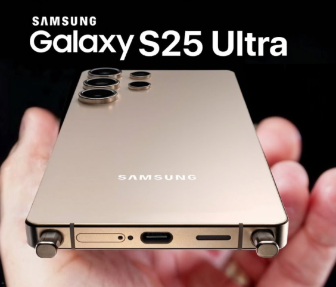

Нова серія флагманських смартфонів Samsung Galaxy S25, чий анонс очікується 22 січня, вже встигла привернути до себе увагу прихильників та інсайдерів, однак не обійшлося без несподіваних моментів.
Корейське видання FnNews повідомляє, що в Південній Кореї компанія Samsung вирішила заморозити вартість нової лінійки, тобто зберегти її на рівні Galaxy S24. Повідомляється, що Galaxy S25 у версії 256 ГБ коштуватиме 1 155 000 вон (800 доларів), S25 Plus - 1 353 000 вон (940 доларів), а за S25 Ultra доведеться віддати 1 698 400 вон (1180 доларів). Таким чином, виробник намагається компенсувати зростання витрат на компоненти, не збільшуючи роздрібні ціни для місцевих покупців.
Водночас інше видання, Gizmochina, зазначає, що Samsung може застосувати той самий підхід і в Європі. За їхніми даними, базова модель S25 з 128 ГБ пам'яті може стартувати від 909 євро, а версія 256 ГБ - від 969 євро. При цьому S25+ у виконанні на 256 ГБ нібито отримає цінник від 1159 євро.
Раніше ми розповідали, що Realme представила смартфон, у якого змінюється колір корпусу. Задня кришка змінить колір з білого на блакитний, якщо температура опуститься нижче 16 градусів.